Vi编辑器是所有Unix及Linux系统下标准的编辑器，类似于windows系统下的notepad（记事本）编辑器，由于在Unix及Linux系统的任何版本，Vi编辑器是完全相同的，因此可以在其他任何介绍vi的地方都能进一步了解它，Vi也是Linux中最基本的文本编辑器，学会它后，我们将在Linux的世界里畅行无阻，尤其是在终端中。
关于vim：
vi和vim都是Linux中的编辑器，不同的是，vim比较高级，可以视为vi的升级版本。vi使用于文本编辑，但是vim更适用于coding（写代码的）。
Vim重点是光标的移动，模式切换，删除，查找，替换，复制，粘贴，撤销命令的使用。
Vim中存在三种模式（大众的认知）：命令模式、编辑模式（输入模式）、末行模式（尾行模式）。
命令模式：在该模式下是不能对文件直接编辑，可以输入快捷键（命令）进行一些操作（删除行，复制行，移动光标，粘贴等等）【打开文件之后默认进入的模式】；
编辑模式：在该模式下可以对文件的内容进行编辑；
末行模式：可以在末行输入命令来对文件进行操作（搜索、替换、保存、退出、撤销、高亮等等）；
Vim的打开文件的方式（4种，要求掌握的就前三种）：
#vim 文件路径 作用：打开指定的文件
#vim +数字 文件的路径 作用：打开指定的文件，并且将光标移动到指定行
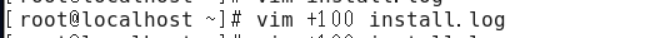
#vim +/关键词 文件的路径 作用：打开指定的文件，并且高亮显示关键词
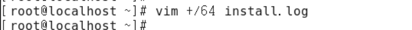
#vim 文件路径1 文件路径2 文件路径3… 作用：同时打开多个文件
重点：先复制出一个/etc/passwd文件，复制当前家目录下（千万不要在etc下直接修改！！！）
#cp /etc/passwd ~/
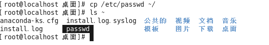
后续一切vim命令都是基于/root/passwd文件进行操作。
退出方式：输入” :q”按下回车即可
补充：在后期使用的Linux系统中，有些分支可能没有初始自带vim，而自带了vi，那么vim指令是不能直接使用的，需要先安装。
注意：该模式是打开文件的第一个看到的模式（打开文件即可进入）
①光标移动到行首
按键：shift + 6 或 ^（T字母上面的6，不要按小键盘的6）
②光标移动到行尾
按键：shift + 4 或 $（R字母的左上角的4，不是小键盘的4）
③光标移动到首行行首
按键：gg
④光标移动到末行行首
按键：G [Capslk 再加 G键] / [Shift + G键]
⑤翻屏
向上翻屏：按键ctrl + b （before） 或 PgUp
向下翻屏：按键ctrl + f （after） 或 PgDn
向上翻半屏：按键ctrl + u （up）
向下翻半屏：按键ctrl + d （down）
⑥向上/下/左/右移动指定的行/列
数字↑/↓/←/→
⑦快速定位到指定行
数字G
①复制光标所在行
按键：yy
粘贴：在想要粘贴的地方按下p键【将粘贴在光标所在行的下一行】,如果想粘贴在光标所在行之前，则使用P键
②以光标所在行为准（包含当前行），向下复制指定的行数
按键：数字yy
③可视化模式下复制
按键：ctrl + v（可视块）或V（可视行）或v（可视），然后按下↑↓←→方向键来选中需要复制的区块，按下y键进行复制（不要按下yy），最后按下p键粘贴
退出可视模式按下Esc。
①剪切/删除光标所在行
按键：dd （删除之后下一行上移）
注意：dd严格意义上说是剪切命令，但是如果剪切了不粘贴就是删除的效果。
②剪切/删除光标所在行为准（包含当前行），向下删除/剪切指定的行
按键：数字dd （删除之后下一行上移）
③剪切/删除光标所在的当前行（光标所在位置）之后的内容，但是删除之后下一行不上移
按键：D （删除之后当前行会变成空白行）
④可视化删除
按键：ctrl + v（可视块）或V（可视行）或v（可视），上下左右移动，按下D表示删除选中行，d表示删选中块
退出可视模式按下Esc。
撤销：输入“:u”（不属于命令模式） 或者 u （undo）
恢复：ctrl + r 恢复（取消）之前的撤销操作
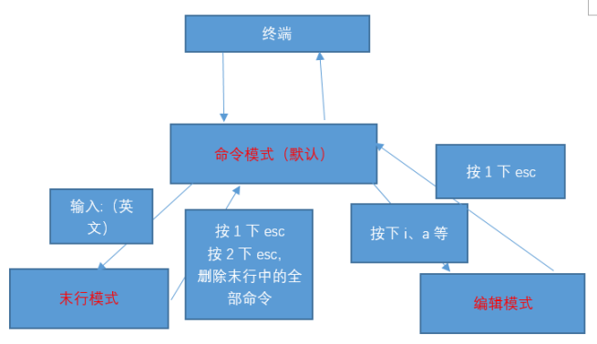
末行模式进入之后的特征：光标在最后一行上
编辑模式进入之后的特征：在最后一行有类似于“------插入（insert）-----”的提
注意：末行模式和编辑模式之间是没有办法直接切换的，必须先走命令模式。
进入方式：由命令模式进入，按下“:”或者“/（表示查找）”即可进入
退出方式：
a. 按下esc
b. 连按2次esc键
c. 删除末行全部输入字符
①保存操作（write）
输入：“:w” 保存文件
输入：“:w 路径” 另存为
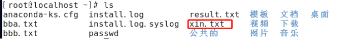
②退出（quit）
输入：“:q” 退出文件
默认情况下，退出的时候需要对已经进行修改的文件进行保存（:w），然后才能退出。
③保存并退出
输入：“:wq” 保存并且退出
④强制 （!）
输入：“:q!” 表示强制退出，刚才做的修改操作不做保存
⑤调用外部命令（了解）
输入：“:!外部命令” 【外部指令写法与在正常终端中执行一样】
例如：在打开文件之后执行外部指令“ls -la /”
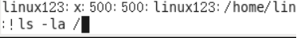
当外部命令执行结束之后按下任意键回到vim编辑器打开的内容
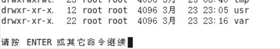
⑥搜索/查找
输入：“/关键词” 【按下/也是进入末行模式的方式之一】
例如：我想在passwd文件中搜索“sbin”关键词
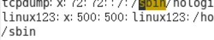
在搜索结果中切换上/下一个结果：N/n 大n向上，小n向下 （next）
如果需要取消高亮，则需要输入：“:nohl”【no highlight】
⑦替换
:s/搜索的关键词/新的内容 替换光标所在行的第一处符合条件的内容
:s/搜索的关键词/新的内容/g 替换光标所在行的全部符合条件的内容
:%s/搜索的关键词/新的内容 替换整个文档中每行第一个符合条件的内容
:%s/搜索的关键词/新的内容/g 替换整个文档的符合条件的内容
%表示整个文件
g表示全局（global）
⑧显示行号（临时）
输入：“:set nu”[number]
如果想取消显示，则输入：“:set nonu”
⑨扩展1：使用vim同时打开多个文件，在末行模式下进行切换文件
查看当前已经打开的文件名称：“:files”
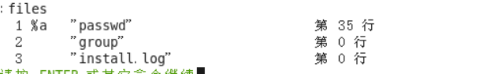
在%a的位置有2种显示可能
%a：a=active，表示当前正在打开的文件；
#：表示上一个打开的文件
切换文件的方式：
a. 如果需要指定切换文件的名称，则可以输入：“:open 已经打开的文件名”
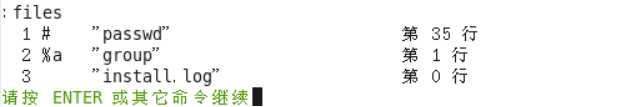
b. 可以通过其他命令来切换上一个文件/下一个文件
输入：“:bn”切换到下一个文件（back next）
输入：“:bp”切换到上一个文件（back prev）
⑩扩展2：部分命令模式操作使用末行模式实现
a. （命令模式下的操作在末行中实现）末行模式下的复制（yy）、剪切（dd）、删除（dd）操作
复制语法：“:开始行号,结束行号y”
剪切删除语法：“:开始行号,结束行号d”
扩展：
一步到位的复制语法——“:开始行号,结束行号 co 粘贴到的行号”
剪切粘贴一步到位语法——“:开始行号,结束行号 m 粘贴到的行号”
b. 末行模式下的快速移动方式：移动到指定的行
按键：输入英文“:”，其后输入行数数字，按下回车
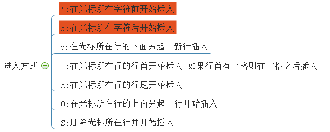
重点看前2个进入方式：i（insert）、a（after）。
退出方式：按下esc键
Vim/etc/passwd
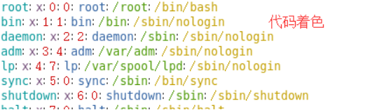
案例：首先创建简单的c语言程序（文件：hello.c）
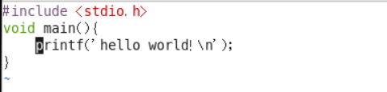
# 表示注释，解释说明作用
Include 包含，引入 包含h文件
Void 空
Main方法名字
如何控制着色显示与否？
进入末行模式显示：“:syntax on”
syntax：语法
关闭显示：“:syntax off”
当在编辑文件的时候突然需要使用计算器去计算一些公式，则此时需要用计算器，但是需要退出，vim自身集成了一个简易的计算器。
a. 进入编辑模式
b. 按下按键“ctrl + R键”，然后输入“=”，此时光标会变到最后一行
c. 输入需要计算的内容，按下回车
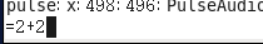
Vim是一款编辑器，编辑器也是有配置文件的。
Vim配置有三种情况：
a. 在文件打开的时候在末行模式下输入的配置（临时的）
b. 个人配置文件（~/.vimrc，如果没有可以自行新建）
c. 全局配置文件（vim自带，/etc/vimrc）
①新建好个人配置文件之后进入编辑
#touch ~/.vimrc
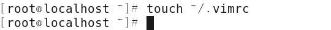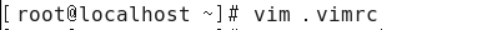
②在配置文件中进行配置
比如显示行号：set nu
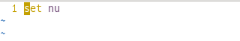
配置好之后vim打开文件就会永远显示行号。
全局配置文件（vim自带，/etc/vimrc）
问题：如果某个配置项，在个人配置文件与全局配置文件产生冲突的时候应该以谁为准？
测试步骤：在两个配置文件中针对同一个配置项设置不同的值
①先在全局的配置中设置不显示行号，在个人的配置文件中设置显示行号，观察结果
最后显示行号：说明以个人为准
②先在全局中配置显示行号，在个人中设置不显示行号，观察结果
最后的显示是不显示行号，说明以个人为准
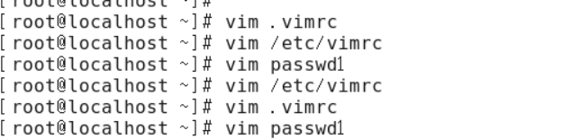
结论：如果针对同一个配置项，个人配置文件中存在，则以个人配置文件为准，如果个人配置文件中不存在这一项，则以全局配置文件为准。（个人>全局）
什么是异常退出：在编辑文件之后并没有正常的去wq（保存退出），而是遇到突然关闭终端或者断电的情况，则会显示下面的效果，这个情况称之为异常退出：
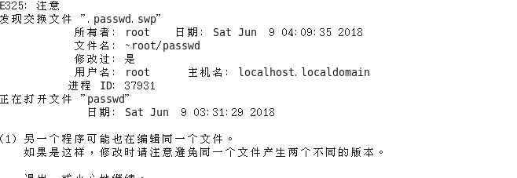
解决办法：
1、将交换文件（在编程过程中产生的临时文件）删除掉即可
2、删除之前文件#rm -f .passwd.swp
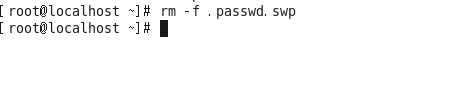
作用：相当于创建一些属于自己的自定义命令
例如：在windows下有cls命令，在Linux下可能因为没有这个命令而不习惯清屏。现在可以通过别名机制来解决这个问题，可以自己创造出cls命令
别名机制依靠一个别名映射文件：~/.bashrc
#vim ~/.bashrc
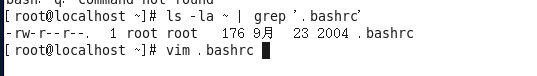
内容效果：
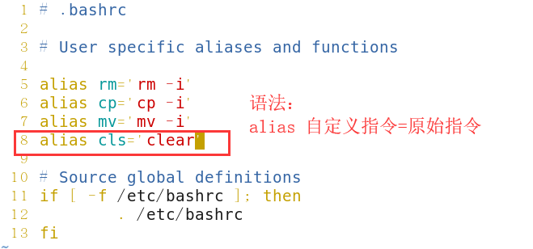
注意：如果想新创造的命令生效，必须要重新登录当前用户。
回顾：之前vim中退出编辑的文件可以使用“:q”或者“:wq”。
除了上面的这个语法之外，vim还支持另外一个保存退出方法“:x”。
说明：
①“:x”在文件没有修改的情况下，表示直接退出，在文件修改的情况下表示保存并退出；
②如果文件没有被修改，但是使用wq进行退出的话，则文件的修改时间会被更新；但是如果文件没有被修改，使用x进行退出的话，则文件修改时间不会被更新的；主要是会混淆用户对文件的修改时间的认定。
因此建议以后使用“:x”来进行对文件的保存退出。
但是：不要使用X，不要使用X，不要使用X，X表示对文件进行加密操作。（大写X表示加密）